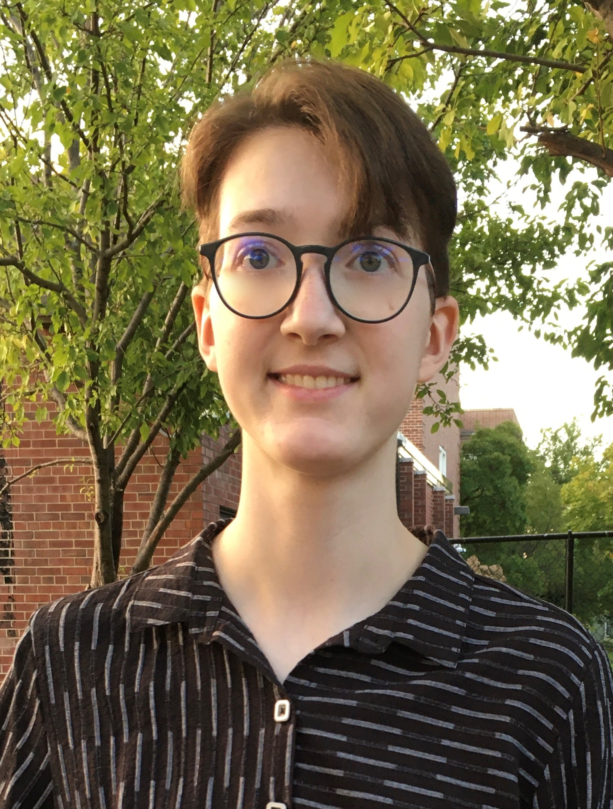

|
Isadora White
Hi! My name is Izzy. Nice to meet you! My pronouns are she/they. why this?
I am a fourth-year undergraduate student at UC Berkeley majoring in Computer Science and Applied Math affiliated with Berkeley AI Research where I am
advised by
Sergey Levine .
In the summer of 2022, I did research at ERCIS with Prof. Joerg Becker on hate speech detection. In my sophomore year, I was affiliated with the Cardiac Vision Lab at UCSF advised by Prof. Jan Christoph and
was an SDE Intern at AWS AI working on anomaly detection for time series. In the summer of 2021, I did research at Informatica in active learning with Prof. AnHai Doan.
Email /
CV /
Bluesky /
Twitter /
Github
|

|
LMRL Gym: Benchmarks for Multi-Turn Reinforcement Learning with Language Models
Marwa Abdulhai
Isadora White ,
Charlie Snell,
Charles Sun,
Joey Hong ,
Yuexiang (Simon) Zhai ,
Kelvin Xu
Sergey Levine
Preprint, In Submission , Nov. 2023
paper
/
website
Created benchmarks to test the capabilities of multi-turn RL algorithms in language.
|
Deep Learning Methods for Movement Classification and Artifact Correction for Reliable Brain-Computer Interfaces
Annie Taylor,
Isadora White ,
Zheyuan Hu
Shiangyi Lin
Deep Learning Course Research Project, May 2023
report
We explore new deep-learning architectures involving transformers and CNNs for classifying ECoG signals as robotic motion.
We propose data imputation and a transformer encoder/decoder architecture to correct artifacts.
|
Reward and Exploration Strategies for Wordle with Deep Reinforcement Learning
Isadora White, Bennett Cohen, Sean Tsung
Deep Reinforcement Learning Course Project, Dec. 2022
report
/
code
Trained Deep Reinforcement Learning agents to play Wordle with custom reward functions and exploration algorithms.
|
Moderat: Language Models for Fair and Explainable German Comment Moderation
Isadora White,
Kilian Mueller
DAAD RISE Germany Internship Presentation, Aug. 2022
slides
/
code
Compared fine-tuned multi-lingual and single language LMs for hate speech detection, explained predictions using SHAP values, and mitgated biases.
|
Website template from Jon Barron
|
{kind=link}